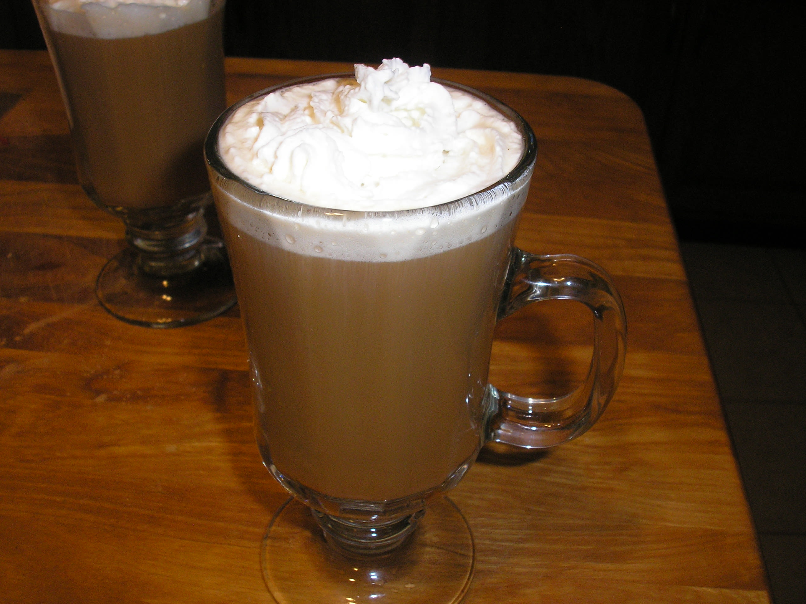

Bavaria, also known as Bayern, is Germany's largest land state, and is well known for its beautiful, old-world charm. They like their coffee strong and sweet, and the same goes for their booze.
This cocktail adds a winter warmer of peppermint schnapps for the taste of sweet, minty, creamy coffee that we all dream of during the holidays.
What You'll Need
- 6 oz hot coffee
- ½ oz peppermint schnapps
- ½ oz Kahlua
- Sugar to taste
- Whipped Cream
Fill your glass about ¾ with hot coffee. Add the schnapps, Kahlua, and sweeten to taste.
Slowly pour the cream so that it rests on top.